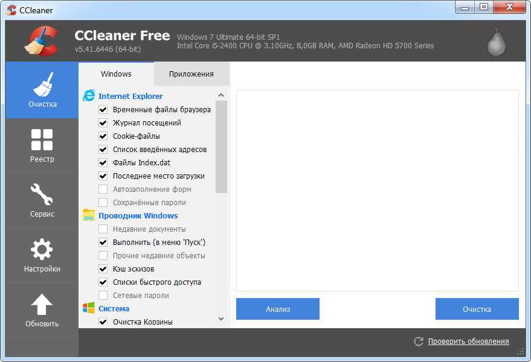

Программы для обслуживания ПК
Ускоритель компьютера
Помогает решить многочисленные проблемы вашего устройства.
Это средство для оптимизации работает со всеми версиями операционной системы,
в том числе Windows 10. Все опции логично рассортированы, доступна техническая
поддержка и обучение, так что при использовании этого софта не возникнет никаких проблем.
ПО проводит глубокую проверку, исправляет ошибочные записи реестра и помогает избавиться
от лишних пунктов в автозапуске. Кроме этого, доступны поиск и удаление дублей, мониторинг
в реальном времени, восстановление системы и защита приватности. При желании можно настроить планировщик.
Функционал:
Advanced System Care
От фирмы iObit предлагает целый набор функций для оптимизации вашего устройства.
Это ПО не только очищает жесткие диски от накопившегося мусора, но также защищает
ваши данные в интернете, отслеживает шпионские программы, отключает энергозатратные
приложения. Также с его помощью можно отслеживать наличие ненужных плагинов и тулбаров
в браузерах.
Плюсы:
Минусы:

CCleaner
Одна из самых мощных программ для очистки жесткого диска от мусора. После установки софт
внедряется в автозагрузку ПК и следит за здоровьем ноутбука, периодически напоминая о
необходимости чистки. В ПО включен режим автоматической и ручной проверки. Также в функции
входит удаление кэша из браузеров, исправление ошибок реестра и подчистка мусора после деинсталляции.
Плюсы:
Минусы:
Advanced System Optimizer
Это комбинация твикеров, оптимизаторов, усилителей, средств защиты конфиденциальности, органайзеров
и других инструментов, которые помогут вашему ПК работать более быстро. Действия, включенные в приложение,
исполняются в фоновом режиме, чтобы эффективно управлять производительностью системы. ПО умеет очищать диски
и реестр, защищать вашу конфиденциальность, проводить резервное копирование и повышает производительность
ноутбука. Модуль интеллектуального сканирования самостоятельно подбирает оптимальные настройки.
Плюсы:
Минусы:
Auslogics BoostSpeed
Позволяет изменять настройки и службы Windows для повышения производительности системы. Он помогает увеличить
скорость запуска и завершения работы, отключить автозагрузку компакт-дисков и нежелательные отчеты об ошибках.
С его помощью можно отслеживать и устанавливать обновления, настраивать автозапуск, отключать расширения
браузеров и проводить дефрагментацию диска.
Плюсы:
Минусы:
Программы для обслуживания пк в основном представляют собой "чистильщики" в этом списке представленны одни
из самых популярных и самых практичных программ, есть как бесплатные их версии так и расширенные платные
версии данных программ.